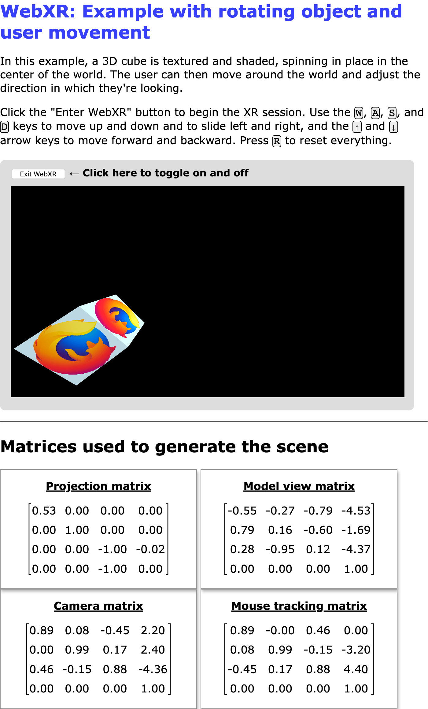

Movement, orientation, and motion: A WebXR example
In this article, we'll make use of information introduced in the previous articles in our WebXR tutorial series to construct an example which animates a rotating cube around which the user can move freely using a VR headset, keyboard, and/or mouse. This will help to solidify your understanding of how the geometry of 3D graphics and VR work, as well as to help ensure you understand the way the functions and data that are used during XR rendering work together.
Figure: Screenshot of this example in action

The core of this example—the spinning, textured, lighted cube—is taken from our WebGL tutorial series; namely, the penultimate article in the series, covering lighting in WebGL.
While reading this article and the accompanying source code, it's helpful to keep in mind that the display for a 3D headset is a single screen, divided in half. The left half of the screen is seen only by the left eye, while the right half is only seen by the right eye. Rendering the scene for immersive presentation requires multiple renders of the scene—once from the perspective of each eye.
When rendering the left eye, the XRWebGLLayer has its viewport configured to restrict drawing to the left half of the drawing surface. Contrarily, when rendering the right eye, the viewport is set to restrict drawing to the right half of the surface.
This example demonstrates this by showing the canvas on the screen, even when presenting a scene as an immersive display using an XR device.
Dependencies
While we will not rely upon any 3D graphics frameworks such as three.js or the like for this example, we do use the glMatrix library for matrix math, which we've used in other examples in the past. This example also imports the WebXR polyfill maintained by the Immersive Web Working Group, which is the team responsible for the WebXR API's specification. By importing this polyfill, we allow the example to work on many browsers that don't yet have WebXR implementations in place, and we smooth out any transient deviations from the specification that occur during these still somewhat experimental days of the WebXR specification.
Options
This example has a number of options you can configure by adjusting the values of constants before you load it in the browser. The code looks like this:
const xRotationDegreesPerSecond = 25;
const yRotationDegreesPerSecond = 15;
const zRotationDegreesPerSecond = 35;
const enableRotation = true;
const allowMouseRotation = true;
const allowKeyboardMotion = true;
const enableForcePolyfill = false;
const SESSION_TYPE = "inline";
const MOUSE_SPEED = 0.003;
xRotationDegreesPerSecond-
The number of degrees of rotation to apply around the X axis per second.
yRotationDegreesPerSecond-
The number of degrees to rotate around the Y axis each second.
zRotationDegreesPerSecond-
The number of degrees per second to rotate around the Z axis.
enableRotation-
A Boolean indicating whether or not to enable the rotation of the cube at all.
allowMouseRotation-
If
true, you can use the mouse to pitch and yaw the view angle. allowKeyboardMotion-
If
true, the W, A, S, and D keys move the viewer up, left, down, and to the right, while the up and down arrow keys move forward and backward. Iffalse, only XR device changes to the view are permitted. enableForcePolyfill-
If this Boolean is
true, the example will attempt to use the WebXR polyfill even if the browser actually has support for WebXR. Iffalse, the polyfill is only used if the browser doesn't implementnavigator.xr. SESSION_TYPE-
The type of XR session to create:
inlinefor an inline session presented in the context of the document andimmersive-vrto present the scene to an immersive VR headset. MOUSE_SPEED-
A multiplier used to scale the inputs from the mouse used for pitch and yaw control.
MOVE_DISTANCE-
The distance to move in response to any of the keys used to move the viewer through the scene.
Note:
This example always displays what it renders on the screen, even if using immersive-vr mode. This lets you compare any differences in rendering between the two modes, and lets you see output from immersive mode even if you don't have a headset.
Setup and utility functions
Next, we declare the variables and constants used throughout the application, starting with those used to store WebGL and WebXR specific information:
let polyfill = null;
let xrSession = null;
let xrInputSources = null;
let xrReferenceSpace = null;
const xrButton = document.querySelector("#enter-xr");
const projectionMatrixOut = document.querySelector("#projection-matrix div");
const modelMatrixOut = document.querySelector("#model-view-matrix div");
const cameraMatrixOut = document.querySelector("#camera-matrix div");
const mouseMatrixOut = document.querySelector("#mouse-matrix div");
let gl = null;
let animationFrameRequestID = 0;
let shaderProgram = null;
let programInfo = null;
let buffers = null;
let texture = null;
let mouseYaw = 0;
let mousePitch = 0;
This is followed by a set of constants, mostly to contain various vectors and matrices used while rendering the scene.
const viewerStartPosition = vec3.fromValues(0, 0, -10);
const viewerStartOrientation = vec3.fromValues(0, 0, 1.0);
const cubeOrientation = vec3.create();
const cubeMatrix = mat4.create();
const mouseMatrix = mat4.create();
const inverseOrientation = quat.create();
const RADIANS_PER_DEGREE = Math.PI / 180.0;
The first two—viewerStartPosition and viewerStartOrientation—indicate where the viewer will be placed relative to the center of the space, and the direction in which they'll initially be looking. cubeOrientation will store the current orientation of the cube, while cubeMatrix and mouseMatrix are storage for matrices used during the rendering of the scene. inverseOrientation is a quaternion which will be used to represent the rotation to apply to the reference space for the object in the frame being rendered.
RADIANS_PER_DEGREE is the value to multiply an angle in degrees by to convert the angle into radians.
The last four variables declared are storage for references to the <div> elements into which we'll output the matrices when we want to show them to the user.
Logging errors
A function called LogGLError() is implemented to provide an easily customized way to output logging information for errors that occur while executing WebGL functions.
function LogGLError(where) {
let err = gl.getError();
if (err) {
console.error(`WebGL error returned by ${where}: ${err}`);
}
}
This takes as its only input a string, where, which is used to indicate what part of the program generated the error, since similar errors can have in multiple situations.
The vertex and fragment shaders
The vertex and fragment shaders are both exactly the same as those used in the example for our article Lighting in WebGL. Refer to that if you're interested in the GLSL source code for the basic shaders used here.
Suffice it to say that the vertex shader computes the position of each vertex given the initial positions of each vertex and the transforms that need to be applied to convert them to simulate the viewer's current position and orientation. The fragment shader returns the color of each vertex, interpolating as needed from the values found in the texture and applying the lighting effects.
Starting up and shutting down WebXR
xrButton.addEventListener("click", onXRButtonClick);
if (!navigator.xr || enableForcePolyfill) {
console.log("Using the polyfill");
polyfill = new WebXRPolyfill();
}
setupXRButton();
We add a handler for click events. Then we look to see if navigator.xr is defined. If it isn't—and/or the enableForcePolyfill configuration constant is set to true—we install the WebXR polyfill by instantiating the WebXRPolyfill class.
Handling the startup and shutdown UI
Then we call the setupXRButton() function, which handles configuring the "Enter/Exit WebXR" button to enable or disable it as necessary depending on the availability of WebXR support for the session type specified in the SESSION_TYPE constant.
function setupXRButton() {
if (navigator.xr.isSessionSupported) {
navigator.xr.isSessionSupported(SESSION_TYPE).then((supported) => {
xrButton.disabled = !supported;
});
} else {
navigator.xr
.supportsSession(SESSION_TYPE)
.then(() => {
xrButton.disabled = false;
})
.catch(() => {
xrButton.disabled = true;
});
}
}
The label of the button gets adjusted in the code that actually handles starting and stopping the WebXR session; we'll see that below.
The WebXR session is toggled on and off by the handler for click events on the button, whose label is appropriately set to either "Enter WebXR" or "Exit WebXR". This is done by the onXRButtonClick() event handler.
async function onXRButtonClick(event) {
if (!xrSession) {
navigator.xr.requestSession(SESSION_TYPE).then(sessionStarted);
} else {
await xrSession.end();
if (xrSession) {
sessionEnded();
}
}
}
This begins by looking at the value of xrSession to see if we already have a XRSession object representing an ongoing WebXR session. If we don't, the click represents a request to enable WebXR mode, so call requestSession() to request a WebXR session of the desired WebXR session type, and then call sessionStarted() to begin running the scene in that WebXR session.
If we already have an ongoing session, on the other hand, we call its end() method to stop the session.
The last thing we do in this code is to check to see if xrSession is still non-NULL. If it is, we call sessionEnded(), the handler for the end event. This code should not be necessary, but there appears to be an issue in which at least some browsers are not correctly firing the end event. By running the event handler directly, we complete the close-out process manually in this situation.
Starting up the WebXR session
The sessionStarted() function handles actually setting up and starting the session, by setting up event handlers, compiling and installing the GLSL code for the vertex and fragment shaders, and attaching the WebGL layer to the WebXR session before kicking off the rendering loop. It gets called as the handler for the promise returned by requestSession().
function sessionStarted(session) {
let refSpaceType;
xrSession = session;
xrButton.innerText = "Exit WebXR";
xrSession.addEventListener("end", sessionEnded);
let canvas = document.querySelector("canvas");
gl = canvas.getContext("webgl", { xrCompatible: true });
if (allowMouseRotation) {
canvas.addEventListener("pointermove", handlePointerMove);
canvas.addEventListener("contextmenu", (event) => {
event.preventDefault();
});
}
if (allowKeyboardMotion) {
document.addEventListener("keydown", handleKeyDown);
}
shaderProgram = initShaderProgram(gl, vsSource, fsSource);
programInfo = {
program: shaderProgram,
attribLocations: {
vertexPosition: gl.getAttribLocation(shaderProgram, "aVertexPosition"),
vertexNormal: gl.getAttribLocation(shaderProgram, "aVertexNormal"),
textureCoord: gl.getAttribLocation(shaderProgram, "aTextureCoord"),
},
uniformLocations: {
projectionMatrix: gl.getUniformLocation(
shaderProgram,
"uProjectionMatrix",
),
modelViewMatrix: gl.getUniformLocation(shaderProgram, "uModelViewMatrix"),
normalMatrix: gl.getUniformLocation(shaderProgram, "uNormalMatrix"),
uSampler: gl.getUniformLocation(shaderProgram, "uSampler"),
},
};
buffers = initBuffers(gl);
texture = loadTexture(
gl,
"https://mdn.github.io/shared-assets/images/examples/fx-nightly-512.png",
);
xrSession.updateRenderState({
baseLayer: new XRWebGLLayer(xrSession, gl),
});
const isImmersiveVr = SESSION_TYPE === "immersive-vr";
refSpaceType = isImmersiveVr ? "local" : "viewer";
mat4.fromTranslation(cubeMatrix, viewerStartPosition);
vec3.copy(cubeOrientation, viewerStartOrientation);
xrSession.requestReferenceSpace(refSpaceType).then((refSpace) => {
xrReferenceSpace = refSpace.getOffsetReferenceSpace(
new XRRigidTransform(viewerStartPosition, cubeOrientation),
);
animationFrameRequestID = xrSession.requestAnimationFrame(drawFrame);
});
return xrSession;
}
After storing the newly-created XRSession object into xrSession, the label of the button is set to "Exit WebXR" to indicate its new function after starting the scene, and a handler is installed for the end event, so we get notified when the XRSession ends.
Then we get a reference to the <canvas> found in our HTML—as well as its WebGL rendering context—which will be used as the drawing surface for the scene. The xrCompatible property is requested when calling getContext() on the element to gain access to the WebGL rendering context for the canvas. This ensures that the context is configured for use as a source for WebXR rendering.
Next, we add event handlers for the mousemove and contextmenu, but only if the allowMouseRotation constant is true. The mousemove handler will deal with the pitching and yawing of the view based upon the movement of the mouse. Since the "" feature functions only while the right mouse button is held down, and clicking using the right mouse button triggers the context menu, we add a handler for the contextmenu event to the canvas to prevent the context menu from appearing when the user initially begins their drag of the mouse.
Next, we compile the shader programs; get references to its variables; initialize the buffers that store the array of each position; the indexes into the position table for each vertex; the vertex normals; and the texture coordinates for each vertex. This is all taken directly from the WebGL sample code, so refer to Lighting in WebGL and its preceding articles Creating 3D objects using WebGL and Using textures in WebGL. Then our loadTexture() function is called to load the texture file.
Now that the rendering structures and data are loaded, we start preparing to run the XRSession. We connect the session to the WebGL layer so it knows what to use as a rendering surface by calling XRSession.updateRenderState() with a baseLayer set to a new XRWebGLLayer.
We then look at the value of the SESSION_TYPE constant to see whether the WebXR context should be immersive or inline. Immersive sessions use the local reference space, while inline sessions use the viewer reference space.
The glMatrix library's fromTranslation() function for 4x4 matrices is used to convert the viewer's start position as given in the viewerStartPosition constant into a transform matrix, cubeMatrix. The viewer's starting orientation, viewerStartOrientation constant, is copied into the cubeOrientation, which will be used to track the rotation of the cube over time.
sessionStarted() finishes up by calling the session's requestReferenceSpace() method to get a reference space object describing the space in which the object is being created. When the promise returned resolves to a XRReferenceSpace object, we call its getOffsetReferenceSpace method to obtain a reference space object to represent the object's coordinate system. The origin of the new space is located at the world coordinates specified by the viewerStartPosition and its orientation set to cubeOrientation. Then we let the session know we're ready to draw a frame by calling its requestAnimationFrame() method. We record the returned request ID in case we need to cancel the request later.
Finally, sessionStarted() returns the XRSession representing the user's WebXR session.
When the session ends
When the WebXR session ends—either because it's being shut down by the user or by calling XRSession.end()—the end event is sent; we have set this up to call a function called sessionEnded().
function sessionEnded() {
xrButton.innerText = "Enter WebXR";
if (animationFrameRequestID) {
xrSession.cancelAnimationFrame(animationFrameRequestID);
animationFrameRequestID = 0;
}
xrSession = null;
}
We can also call sessionEnded() directly if we wish to programmatically end the WebXR session. In either case, the label of the button is updated to indicate that a click will start a session, and then, if there is a pending request for an animation frame, we cancel it by calling cancelAnimationFrame
Once that's done, the value of xrSession is changed to NULL to indicate that we're done with the session.
Implementing the controls
Now let's take a look at the code that handles turning keyboard and mouse events into something usable for controlling an avatar in a WebXR scenario.
Moving using the keyboard
In order to allow the user to move through the 3D world even if they don't have a WebXR device with the inputs to perform movement through space, our handler for keydown events, handleKeyDown(), responds by updating offsets from the object's origin based on which key was pressed.
function handleKeyDown(event) {
switch (event.key) {
case "w":
case "W":
verticalDistance -= MOVE_DISTANCE;
break;
case "s":
case "S":
verticalDistance += MOVE_DISTANCE;
break;
case "a":
case "A":
transverseDistance += MOVE_DISTANCE;
break;
case "d":
case "D":
transverseDistance -= MOVE_DISTANCE;
break;
case "ArrowUp":
axialDistance += MOVE_DISTANCE;
break;
case "ArrowDown":
axialDistance -= MOVE_DISTANCE;
break;
case "r":
case "R":
transverseDistance = axialDistance = verticalDistance = 0;
mouseYaw = mousePitch = 0;
break;
default:
break;
}
}
The keys and their effects are:
- The W key moves the viewer upward by
MOVE_DISTANCE. - The S key moves the viewer downward by
MOVE_DISTANCE. - The A key slides the viewer to the left by
MOVE_DISTANCE. - The D key slides the viewer to the right by
MOVE_DISTANCE. - The up arrow key, ↑, slides the viewer forward by
MOVE_DISTANCE. - The down arrow key, ↓, slides the viewer backward by
MOVE_DISTANCE. - The R key resets the viewer to their starting position and orientation by resetting the input offsets all to 0.
These offsets will be applied by the renderer starting with the next frame drawn.
Pitching and yawing with the mouse
We also have a mousemove event handler which checks to see if the right mouse button is down, and if so, calls the rotateViewBy() function, defined next, to calculate and store the new pitch (looking up and down) and yaw (looking left and right) values.
function handlePointerMove(event) {
if (event.buttons & 2) {
rotateViewBy(event.movementX, event.movementY);
}
}
Calculating the new pitch and yaw values is handled by the function rotateViewBy():
function rotateViewBy(dx, dy) {
mouseYaw -= dx * MOUSE_SPEED;
mousePitch -= dy * MOUSE_SPEED;
if (mousePitch < -Math.PI * 0.5) {
mousePitch = -Math.PI * 0.5;
} else if (mousePitch > Math.PI * 0.5) {
mousePitch = Math.PI * 0.5;
}
}
Given as input the mouse deltas, dx and dy, the new yaw value is computed by subtracting from the current value of mouseYaw the product of dx and the MOUSE_SPEED scaling constant. You can, then, control how responsive the mouse is by increasing the value of MOUSE_SPEED.
Drawing a frame
Our callback for XRSession.requestAnimationFrame() is implemented in the drawFrame() function shown below. Its job is to obtain the viewer's reference space, compute how much movement needs to be applied to any animated objects given the amount of time that's elapsed since the last frame, and then to render each of the views specified by the viewer's XRPose.
let lastFrameTime = 0;
function drawFrame(time, frame) {
const session = frame.session;
let adjustedRefSpace = xrReferenceSpace;
let pose = null;
animationFrameRequestID = session.requestAnimationFrame(drawFrame);
adjustedRefSpace = applyViewerControls(xrReferenceSpace);
pose = frame.getViewerPose(adjustedRefSpace);
if (pose) {
const glLayer = session.renderState.baseLayer;
gl.bindFramebuffer(gl.FRAMEBUFFER, glLayer.framebuffer);
LogGLError("bindFrameBuffer");
gl.clearColor(0, 0, 0, 1.0);
gl.clearDepth(1.0); // Clear everything
gl.clear(gl.COLOR_BUFFER_BIT | gl.DEPTH_BUFFER_BIT);
LogGLError("glClear");
const deltaTime = (time - lastFrameTime) * 0.001; // Convert to seconds
lastFrameTime = time;
for (const view of pose.views) {
const viewport = glLayer.getViewport(view);
gl.viewport(viewport.x, viewport.y, viewport.width, viewport.height);
LogGLError(`Setting viewport for eye: ${view.eye}`);
gl.canvas.width = viewport.width * pose.views.length;
gl.canvas.height = viewport.height;
renderScene(gl, view, programInfo, buffers, texture, deltaTime);
}
}
}
The first thing we do is call requestAnimationFrame() to request that drawFrame() be called again for the next frame to be rendered. Then we pass the object's reference space into the applyViewerControls() function, which returns a revised XRReferenceSpace that transforms the position and orientation of the object to take into account the movement, pitch, and yaw applied by the user using the keyboard and mouse. Remember that, as always, the world's objects are moved and reoriented, not the viewer. The returned reference space makes it easy for us to do just that.
With the new reference space in hand, we get the XRViewerPose representing the viewer's point of view—for both of their eyes. If that's successful, we begin preparing to render by getting the XRWebGLLayer being used by the session and binding its frame buffer to be used as the WebGL frame buffer (so that rendering WebGL draws into the layer and therefore the XR device's display). With WebGL now configured to render to the XR device, we clear the frame to black and are ready to begin rendering.
The time elapsed since the last frame was rendered (in seconds) is computed by subtracting the previous frame's timestamp, lastFrameTime, from the current time as specified by the time parameter and then multiplying by 0.001 to convert milliseconds to seconds. The current time is then saved into lastFrameTime;
The drawFrame() function ends by iterating over every view found in the XRViewerPose, setting up the viewport for the view, and calling renderScene() to render the frame. By setting the viewport for each view, we handle the typical scenario in which the views for each eye are each rendered onto half of the WebGL frame. The XR hardware then handles ensuring that each eye only sees the portion of that image that is intended for that eye.
Note:
In this example, we're visually presenting the frame both on the XR device and on the screen. To ensure that the on-screen canvas is the right size to allow us to do this, we set its width to be equal to the individual XRView width multiplied by the number of views; the canvas height is always the same as the viewport's height. The two lines of code that adjust the canvas size are not needed in regular WebXR rendering loops.
Applying the user inputs
The applyViewerControls() function, which is called by drawFrame() before beginning to render anything, takes the offsets in each of the three directions, the yaw offset, and the pitch offset as recorded by the handleKeyDown() and handlePointerMove() functions in response to the user pressing keys and dragging their mouse with the right mouse button pressed. It takes as input the base reference space for the object, and returns a new reference space that alters the location and orientation of the object on match the result of the inputs.
function applyViewerControls(refSpace) {
if (
!mouseYaw &&
!mousePitch &&
!axialDistance &&
!transverseDistance &&
!verticalDistance
) {
return refSpace;
}
quat.identity(inverseOrientation);
quat.rotateX(inverseOrientation, inverseOrientation, -mousePitch);
quat.rotateY(inverseOrientation, inverseOrientation, -mouseYaw);
let newTransform = new XRRigidTransform(
{ x: transverseDistance, y: verticalDistance, z: axialDistance },
{
x: inverseOrientation[0],
y: inverseOrientation[1],
z: inverseOrientation[2],
w: inverseOrientation[3],
},
);
mat4.copy(mouseMatrix, newTransform.matrix);
return refSpace.getOffsetReferenceSpace(newTransform);
}
If all the input offsets are zero, we just return the original reference space. Otherwise, we create from the orientation changes in mousePitch and mouseYaw a quaternion specifying the inverse of that orientation, so that applying the inverseOrientation to the cube will correctly appear to reflect the viewer's movement.
Then it's time to create a new XRRigidTransform object representing the transform that will be used to create the new XRReferenceSpace for the moved and/or re-oriented object. The position is a new vector whose x, y, and z correspond to the offsets moved along each of those axes. The orientation is the inverseOrientation quaternion.
We copy the transform's matrix into mouseMatrix, which we'll use later to display the mouse tracking matrix to the user (so this is a step you normally can skip). Finally, we pass the XRRigidTransform into the object's current XRReferenceSpace in order to obtain the reference space that integrates this transform to represent the placement of the cube relative to the user given the user's movements. That new reference space is returned to the caller.
Rendering the scene
The renderScene() function is called to actually render the parts of the world that are visible to the user at the moment. It's called once for each eye, with slightly different positions for each eye, in order to establish the 3D effect needed for XR gear.
Most of this code is typical WebGL rendering code, taken directly from the drawScene() function in the Lighting in WebGL article, and it's there that you should look for details on the WebGL rendering parts of this example (view the code on GitHub). But here it begins with some code specific to this example, so we'll take a deeper look at that part.
const normalMatrix = mat4.create();
const modelViewMatrix = mat4.create();
function renderScene(gl, view, programInfo, buffers, texture, deltaTime) {
const xRotationForTime =
xRotationDegreesPerSecond * RADIANS_PER_DEGREE * deltaTime;
const yRotationForTime =
yRotationDegreesPerSecond * RADIANS_PER_DEGREE * deltaTime;
const zRotationForTime =
zRotationDegreesPerSecond * RADIANS_PER_DEGREE * deltaTime;
gl.enable(gl.DEPTH_TEST); // Enable depth testing
gl.depthFunc(gl.LEQUAL); // Near things obscure far things
if (enableRotation) {
mat4.rotate(
cubeMatrix, // destination matrix
cubeMatrix, // matrix to rotate
zRotationForTime, // amount to rotate in radians
[0, 0, 1],
); // axis to rotate around (Z)
mat4.rotate(
cubeMatrix, // destination matrix
cubeMatrix, // matrix to rotate
yRotationForTime, // amount to rotate in radians
[0, 1, 0],
); // axis to rotate around (Y)
mat4.rotate(
cubeMatrix, // destination matrix
cubeMatrix, // matrix to rotate
xRotationForTime, // amount to rotate in radians
[1, 0, 0],
); // axis to rotate around (X)
}
mat4.multiply(modelViewMatrix, view.transform.inverse.matrix, cubeMatrix);
mat4.invert(normalMatrix, modelViewMatrix);
mat4.transpose(normalMatrix, normalMatrix);
displayMatrix(view.projectionMatrix, 4, projectionMatrixOut);
displayMatrix(modelViewMatrix, 4, modelMatrixOut);
displayMatrix(view.transform.matrix, 4, cameraMatrixOut);
displayMatrix(mouseMatrix, 4, mouseMatrixOut);
{
const numComponents = 3;
const type = gl.FLOAT;
const normalize = false;
const stride = 0;
const offset = 0;
gl.bindBuffer(gl.ARRAY_BUFFER, buffers.position);
gl.vertexAttribPointer(
programInfo.attribLocations.vertexPosition,
numComponents,
type,
normalize,
stride,
offset,
);
gl.enableVertexAttribArray(programInfo.attribLocations.vertexPosition);
}
{
const numComponents = 2;
const type = gl.FLOAT;
const normalize = false;
const stride = 0;
const offset = 0;
gl.bindBuffer(gl.ARRAY_BUFFER, buffers.textureCoord);
gl.vertexAttribPointer(
programInfo.attribLocations.textureCoord,
numComponents,
type,
normalize,
stride,
offset,
);
gl.enableVertexAttribArray(programInfo.attribLocations.textureCoord);
}
{
const numComponents = 3;
const type = gl.FLOAT;
const normalize = false;
const stride = 0;
const offset = 0;
gl.bindBuffer(gl.ARRAY_BUFFER, buffers.normal);
gl.vertexAttribPointer(
programInfo.attribLocations.vertexNormal,
numComponents,
type,
normalize,
stride,
offset,
);
gl.enableVertexAttribArray(programInfo.attribLocations.vertexNormal);
}
gl.bindBuffer(gl.ELEMENT_ARRAY_BUFFER, buffers.indices);
gl.useProgram(programInfo.program);
gl.uniformMatrix4fv(
programInfo.uniformLocations.projectionMatrix,
false,
view.projectionMatrix,
);
gl.uniformMatrix4fv(
programInfo.uniformLocations.modelViewMatrix,
false,
modelViewMatrix,
);
gl.uniformMatrix4fv(
programInfo.uniformLocations.normalMatrix,
false,
normalMatrix,
);
gl.activeTexture(gl.TEXTURE0);
gl.bindTexture(gl.TEXTURE_2D, texture);
gl.uniform1i(programInfo.uniformLocations.uSampler, 0);
{
const vertexCount = 36;
const type = gl.UNSIGNED_SHORT;
const offset = 0;
gl.drawElements(gl.TRIANGLES, vertexCount, type, offset);
}
}
renderScene() begins by calculating how much rotation should occur around each of the three axes in the amount of time that has elapsed since the previous frame was rendered. These values let us adjust the rotation of our animating cube the right amount to ensure that its movement speed stays consistent regardless of variations in the frame rate that may occur due to system load. These values are calculated as the number of radians of rotation to apply given the elapsed time and stored into the constants xRotationForTime, yRotationForTime, and zRotationForTime.
After enabling and configuring depth testing, we check the value of the enableRotation constant to see if rotation of the cube is enabled; if it is, we use glMatrix to rotate the cubeMatrix (representing the cube's current orientation relative to the world space) around the three axes. With the cube's global orientation established, we then multiply that by the inverse of the view's transform matrix to get the final model view matrix—the matrix to apply to the object to both rotate it for its animation purposes, but to also move and reorient it to simulate the viewer's motion through the space.
Then the view's normal matrix is computed by taking the model view matrix, inverting it, and transposing it (swapping its columns and rows).
The last few lines of code added for this example are four calls to displayMatrix(), a function which displays the contents of a matrix for analysis by the user. The remainder of the function is identical or essentially identical to the older WebGL sample from which this code is derived.
Displaying a matrix
For instructive purposes, this example displays the contents of the important matrices used while rendering the scene. The displayMatrix() function is used for this; this function uses MathML to render the matrix, falling back to a more array-like format if MathML isn't supported by the user's browser.
function displayMatrix(mat, rowLength, target) {
let outHTML = "";
if (mat && rowLength && rowLength <= mat.length) {
let numRows = mat.length / rowLength;
outHTML = "<math display='block'>\n<mrow>\n<mo>[</mo>\n<mtable>\n";
for (let y = 0; y < numRows; y++) {
outHTML += "<mtr>\n";
for (let x = 0; x < rowLength; x++) {
outHTML += `<mtd><mn>${mat[x * rowLength + y].toFixed(2)}</mn></mtd>\n`;
}
outHTML += "</mtr>\n";
}
outHTML += "</mtable>\n<mo>]</mo>\n</mrow>\n</math>";
}
target.innerHTML = outHTML;
}
This replaces the contents of the element specified by target with a newly-created <math> element which contains the 4x4 matrix. Each entry is displayed with up to two decimal places.
Everything else
The rest of the code is identical to that found in the earlier examples:
initShaderProgram()-
Initializes the GLSL shader program, calling
loadShader()to load and compile each shader's program, then attaching each one to the WebGL context. Once they're compiled, the program is linked and returned to the caller. loadShader()-
Creates a shader object and loads the specified source code into it before compiling the code and checking to ensure that the compiler succeeded before returning the newly compiled shader to the caller. If an error occurs,
NULLis returned instead. initBuffers()-
Initializes the buffers that contain data to be passed into WebGL. These buffers include the array of vertex positions, the array of vertex normals, the texture coordinates for each surface of the cube, and the array of vertex indices (specifying which entry in the vertex list represents each corner of the cube).
loadTexture()-
Loads the image at a given URL and creates a WebGL texture from it. If the image's dimensions aren't both powers of two (see the
isPowerOf2()function), mipmapping is disabled and wrapping is clamped to the edges. This is because optimized rendering of mipmapped textures only works for textures whose dimensions are powers of two in WebGL 1. WebGL 2 supports arbitrarily-sized textures for mipmapping. isPowerOf2()-
Returns
trueif the specified value is a power of two; otherwise returnsfalse.
Putting it all together
When you take the code and add in HTML and some additional JavaScript, you'll have something like our WebXR: Example with rotating object and user movement demo. Remember: as you wander around, if you get lost, just hit the R key to reset yourself to the beginning.
A tip: if you don't have an XR device, you may be able to get some of the 3D effect if you bring your face very close to the screen, with your nose centered along the border between the left and right eye images in the canvas. By carefully focusing through the screen at the image, and slowly moving forward and backward, you should eventually be able to bring the 3D image into focus. It can take practice, and your nose may literally be touching the screen, depending on how sharp your eyesight is.
There are plenty of things you can do using this example as a starting point. Try adding more objects to the world, or improve the movement controls to move more realistically. Add walls, ceiling, and floor to enclose you in a space instead of having an infinite-seeming universe to get lost in. Add collision testing or hit testing, or the ability to change the texture of each face of the cube.
There are few limitations on what can be done if you set yourself to it.
See also
- Learn WebGL (includes some great visualizations of the camera and how it relates to the virtual world)
- WebGL Fundamentals
- Learn OpenGL